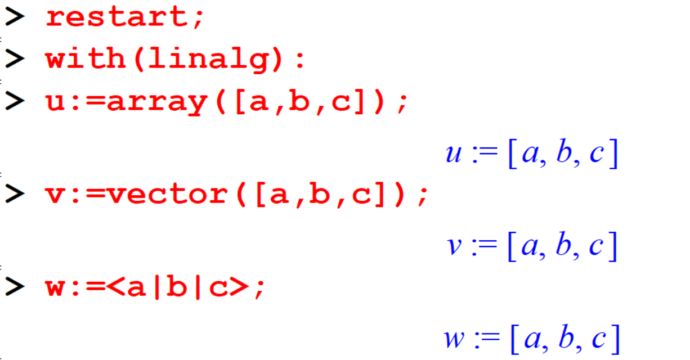
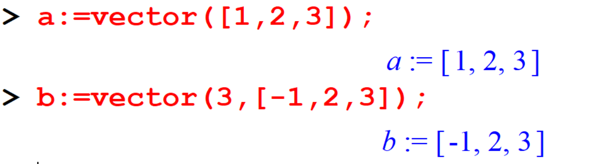

Lesson 5 Vectors
5.1 Defining a vector
A vector in Maple is a one-dimensional array. It is part of the linalg package. There are two commands for entering a vector in Maple. Those are array and vector.
[> with(linalg):
[> u:=array([a,b,c]);
[> v:=vector([a,b,c]);
[> w:=<a|b|c>; 
Defining a vector with specified elements:
[> a:=vector([1,2,3]);
[> b:=vector(3,[-1,2,3]);
Defining a vector with 3 unspecified elements will gives you a symbolic vector of dimension three.
5.2 Vector Algebra
Maple can handle most of the common operations with vectors.
5.3 Geometrical representation of vectors
Vectors are determined by both a magnitude and a direction and they are represented geometrically in 2 or 3 dimensional space as directed line segments or arrows. We can represent vectors graphically using the arrow and display commands from the plots package.
5.4 Exercises
Show that the vector \(9\mathbf{i} + \mathbf{j} - 6\mathbf{k}\) is perpendicular to the vector \(4\mathbf{i} - 6\mathbf{j} + 5\mathbf{k}\).
Find the angle between the vectors \(\mathbf{i} - 2\mathbf{j} - 2\mathbf{k}\) and \(2\mathbf{i} + \mathbf{j} - 2\mathbf{k}\).
Find \(\mathbf{a} \times \mathbf{b}\) and \(\mathbf{b} \times \mathbf{a}\) where \(\mathbf{a} = 3\mathbf{i} + \mathbf{j} + 2\mathbf{k}\) and \(\mathbf{b} = 2\mathbf{i} - 2\mathbf{j} + 4\mathbf{k}\).
Find the area of the triangle whose vertices are \(2\mathbf{i} + 3\mathbf{j} - \mathbf{k}\), \(\mathbf{i} - \mathbf{j} + 2\mathbf{k}\), and \(2\mathbf{i} + 2\mathbf{j} + \mathbf{k}\).
Find the area of the triangle whose vertices are \(\mathbf{i} + \mathbf{j} + \mathbf{k}\), \(\mathbf{i} + 2\mathbf{j} + 3\mathbf{k}\), and \(2\mathbf{i} + 3\mathbf{j} + \mathbf{k}\).
If \(\mathbf{a} = 2\mathbf{i} - 3\mathbf{j} + \mathbf{k}\), \(\mathbf{b} = \mathbf{i} - \mathbf{j} + 2\mathbf{k}\), \(\mathbf{c} = 2\mathbf{i} + \mathbf{j} + \mathbf{k}\), then find:
- \((\mathbf{a} \times \mathbf{b}) \cdot \mathbf{c}\)
- \((\mathbf{b} \times \mathbf{c}) \cdot \mathbf{a}\)
- \((\mathbf{a} \times \mathbf{b}) \times \mathbf{c}\)
- \((\mathbf{b} \times \mathbf{c}) \times \mathbf{a}\)
For any vectors \(\mathbf{a}, \mathbf{b}, \mathbf{c}\) and any scalar \(k\), prove that:
- \(\mathbf{a} \cdot (\mathbf{b} + \mathbf{c}) = \mathbf{a} \cdot \mathbf{b} + \mathbf{a} \cdot \mathbf{c}\)
- \(k(\mathbf{a} \cdot \mathbf{b}) = (k\mathbf{a}) \cdot \mathbf{b} = \mathbf{a} \cdot (k\mathbf{b})\)
- \(\mathbf{a} \cdot \mathbf{a} = |\mathbf{a}|^2\)
- \(\mathbf{a} \times (\mathbf{b} + \mathbf{c}) = \mathbf{a} \times \mathbf{b} + \mathbf{a} \times \mathbf{c}\)
- \(k(\mathbf{a} \times \mathbf{b}) = (k\mathbf{a}) \times \mathbf{b} = \mathbf{a} \times (k\mathbf{b})\)